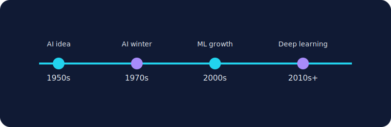

What is Artificial Intelligence?
Artificial Intelligence (AI) is the field of building machines that can perform tasks that usually require human intelligence, such as learning, reasoning, planning, language understanding, and pattern recognition.
This section explains what AI is, how it evolved, where it is used today, and why responsible development is essential.
Artificial Intelligence (AI) is the field of building machines that can perform tasks that usually require human intelligence, such as learning, reasoning, planning, language understanding, and pattern recognition.
The term AI became popular in the 1950s. Progress was uneven, including periods called "AI winters" when funding dropped. With more data and computing power, AI advanced rapidly in the 2010s and beyond.
Modern AI includes machine learning, deep learning, natural language processing, computer vision, and generative AI systems that can create new content.
AI developed in waves. Early research introduced the concept of machine intelligence, later decades faced limitations, and modern breakthroughs came from more data, stronger hardware, and better learning algorithms.
Models learn from historical data to make predictions, classifications, or rankings in new situations.
NLP powers translation tools, summarizers, chatbots, and sentiment analysis across written and spoken text.
Vision systems detect objects, classify images, and support diagnostics, safety monitoring, and navigation tools.
AI is expected to become more integrated into daily life, with stronger decision support tools, better human-AI collaboration, and wider use in science, education, and healthcare. Future progress depends on ethical design, clear regulation, and public trust.
Key message: AI should augment human decision-making, not blindly replace it. Human oversight is critical in high-stakes areas.